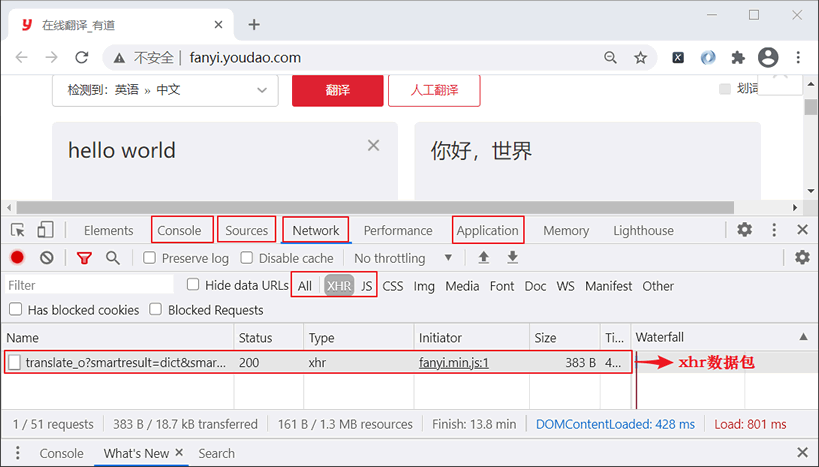
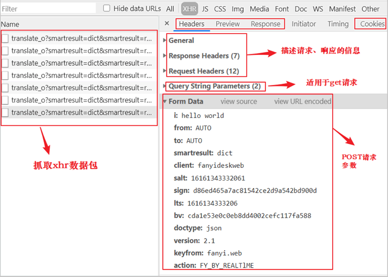
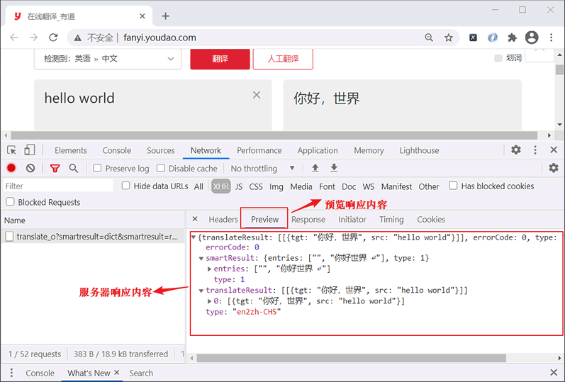

浏览器实现抓包过程详解
几乎所有浏览器都提供了抓取数据包的功能，因为浏览器为抓包提供了一个专门的操作界面，因此这种抓包方式也被称为“控制台抓包”。本节以 Chrome 浏览器为例进行抓包演示。
首先访问有道翻译网站，然后使用快捷键 F12 打开控制台，并找到
Cookie 是网站服务器为了辨别用户身份，而储存在客户端浏览器上一段加密字符串。某些网站需要用户登录后才可以看到相应的数据。如果想要爬取此类网站的数据，就需要使用 Cookie 模拟用户登录。
接下来，对上图 2 中常用选项做简单介绍：Headers 用来描述整个请求信息，Preview 用来对响应内容进行预览，Response 用于查看响应内容，Cookies 用于查看客户端 Cookie 信息。
抓包是分析请求、响应数据，以及监视 HTTP(S) 通信的常用方法，它能够帮助我们明确要请求的 URL、请求参数/参数值、Cookies，以及其他响应信息，这对于构建 POST 请求方法十分重要。
除了使用浏览器自带的调试工具外，您也可以使用 Fiddler 抓包工具，这款软件不仅适用于 Web 抓包，同样也适用于手机移动端抓包， 如果感兴趣的话可以点击了解（https://www.telerik.com/fiddler）。
控制台抓包指的是利用浏览器开的发者调试工具抓取客户端与后端服务器交互的数据，它能够将网络传输中发送与接收的数据进行截获、重发和编辑。
控制台抓包非常适合于 POST 请求类型。我们知道，POST 请求使用 Form 表单向服务器提交数据，通过抓包可以获取 POST 请求体的数据以及相应参数，从而对响应内容进行分析。下面以有道翻译（http://fanyi.youdao.com/）为例，讲解如何进行控制台抓包。控制台界面
关于开发者调试工具，您应该不会感到陌生，它除了有检查网页结构、元素构成的功能外，还有许多其他重要功能，比如抓取数据包。下面对如何抓包做重点介绍。首先访问有道翻译网站，然后使用快捷键 F12 打开控制台，并找到
Network选项卡，最后在有道翻译的输入框内输入“hello world”进行翻译，控制台主界面如下所示：

图 1：开发者调试工具
下面对上图 1 中控制台的常用选项做简单介绍：
图 1：开发者调试工具
1) NetWork
该选项主要用于抓取网络数据包，比如查看请求信息、响应信息等。它有三个常用选项卡，分别是 All、XHR、JS，其作用如下：- All：抓取所有的网络数据包
- XHR：抓取所有异步加载的网络数据包
- JS：抓取所有的JS文件
2) Sources
该选项主要用于查看页面的 HTML 、JavaScript 、CSS 的源代码，除此之外，最重要的是它还可以调试 JS 源代码，可以给 JS 代码打断点调试，有助于分析爬虫程序中的一些参数。3) Console
交互模式，能够执行 JavaScript 代码，一般用于对当前程序中 JS 代码进行测试，同时也可以查看 JavaScript 对象，或者调试日志、异常信息等。4) Application
该选项用于查看、修改本地存储（Local Storage）以及会话存储（Session Stroage）等，同时它也可以用来查看 Cookie 信息。Cookie 是网站服务器为了辨别用户身份，而储存在客户端浏览器上一段加密字符串。某些网站需要用户登录后才可以看到相应的数据。如果想要爬取此类网站的数据，就需要使用 Cookie 模拟用户登录。
数据包抓取
有道翻译采用了 JS 异步加载的方式获取翻译结果，并将该结果渲染到指定的输出框内。所谓异步加载，即不需要刷新页面，就可实现页面的局部渲染。对于这样数据，可以通过 NetWork 的中 XHR 选项来抓取数据包，并选择查看最后一个数据包，如下图 2 所示：

图2：抓取数据包
因为异步加载几乎是实时响应的，所以当您在输入框内输入“hello world”的过程中，每输出一个单词都会向服务器发送一次异步请求（若输出很慢时，一个字母都会发送一次请求），除非您事先将要查询的单词复制好，一次性粘贴到输入框内，只有这样才会得到一个数据包。因此，在这里选择了最后一个数据包进行分析。图2：抓取数据包
接下来，对上图 2 中常用选项做简单介绍：Headers 用来描述整个请求信息，Preview 用来对响应内容进行预览，Response 用于查看响应内容，Cookies 用于查看客户端 Cookie 信息。

图3：预览响应内容
看变化规律
在有道翻译的输入框内多输入几个单词或者汉字，查看 Form Data 的变换规律。你会发现有些参数的值总是变化的，而有些参数值没有变化，比如 salt、sign、lts 总是变化的，而 bv 等参数是不变化的，而参数 i 代表用户输入的单词。如下所示：i: hello world #你输入的单词 salt: 16161405904876 sign: a6f9d57d297acc79f31b049e2a542519 lts: 1616140590487 bv: cda1e53e0c0eb8dd4002cefc117fa588经过分析，最终您会发现如下规律：lts 代表毫秒时间戳；salt 和 lts 之间存在着某种关联，因为两者只有最后一个数字是不同的；而 sign 对应的值是一个加密后的字符串。在下一节我们将讲解如何破解有道翻译，将它作为 API 接口实现在线实时翻译。
抓包是分析请求、响应数据，以及监视 HTTP(S) 通信的常用方法，它能够帮助我们明确要请求的 URL、请求参数/参数值、Cookies，以及其他响应信息，这对于构建 POST 请求方法十分重要。
除了使用浏览器自带的调试工具外，您也可以使用 Fiddler 抓包工具，这款软件不仅适用于 Web 抓包，同样也适用于手机移动端抓包， 如果感兴趣的话可以点击了解（https://www.telerik.com/fiddler）。
关注公众号「站长严长生」，在手机上阅读所有教程，随时随地都能学习。内含一款搜索神器，免费下载全网书籍和视频。

微信扫码关注公众号